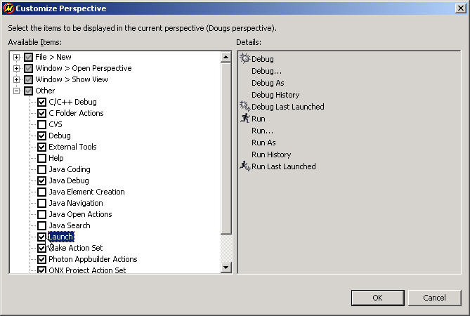
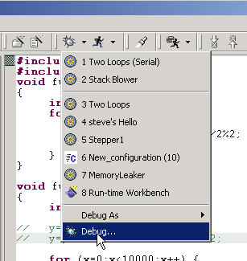
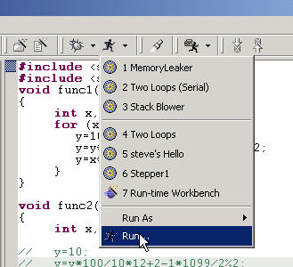
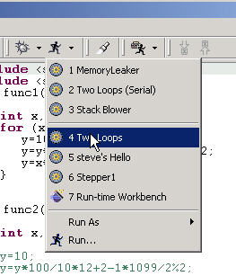
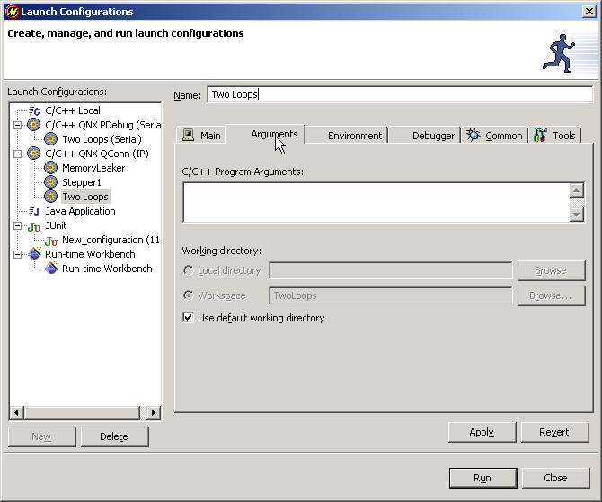
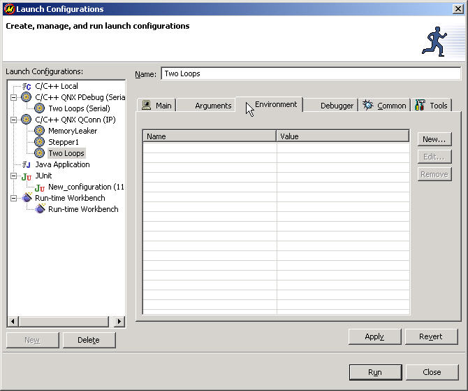
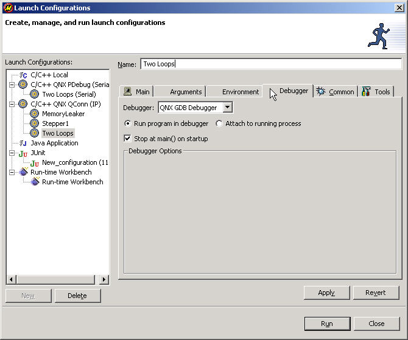
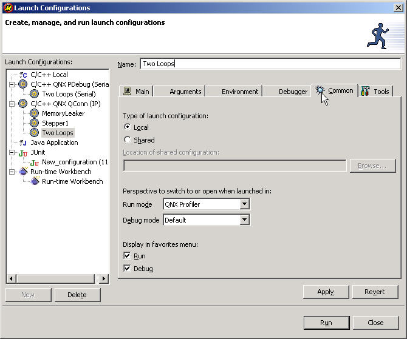

Before running or debugging a program, you must configure how and where to
run it, and what options to pass to it. To do all this, you must use the
launcher.
In this chapter:
To run or debug programs with the IDE, you must set up a launch
configuration. Launch configurations define which programs to launch,
the command-line options to use, and what values to use for environment
variables.
The IDE saves your launch configurations so you can quickly reproduce the
execution conditions by running existing configurations, even if the setup
is complicated.
The IDE supports these types of launch configurations:
- C/C++ Local
- If you're developing on your target (self-hosted), you may create a C/C++ Local launch configuration. You don't need to use qconn; the IDE launches your program through gdb.
- C/C++ Postmortem debugger
- If your program produced a corefile (via the dumper utility) when it faulted, you can examine the state of your program by loading it into the postmortem debugger. This option is available only when you select Debug. When you debug, you're prompted with the Select the corefile dialog.
You can use the same launch configuration to run or debug a program. Your choices in the Launch Configurations dialog may
cause subtle changes in the dialog but greatly affect such things as which options in the
dialog are enabled.
The Run and Debug menu items appear in the C/C++ Development perspective by default, but they might not appear in all perspectives. It's also possible to remove them. If the Run-->Run menu item doesn't appear, you must enable it.
To enable the Run and Debug menu items:
- From the main menu, select Window-->Customize Perspective.
The Customize Perspective dialog appears.
- In the left pane, select Other-->Launch.
- Enable Launch:

- Click OK.
The Run-->Run menu item is now accessible in your current perspective.
When you first debug a program, you have to create a launch configuration.
To debug a program the first time:
- In the C/C++ Projects view (or the Navigator view), select your project.
- From the main menu, select Run-->Debug (or, click the Debug icon and select Debug from the dropdown menu):

- Select a launch configuration type:

If you're connecting to your target via IP, select C/C++ QNX QConn (IP). If not, see the
"Types of Launch Configurations" section in this chapter before deciding:
- Click New.
The dialog displays the appropriate tabs
- Enter an appropriate description for your configuration in the Name field.
- Fill in the details in the various tabs. See the "Setting execution options (Launch Configurations tabs)" section in this chapter for details about each tab.
- Click Debug.
You can now debug your program.
When you configure a program to run, you should also configure it to debug as well.
 |
There are fewer options for running programs than for debugging. Some configurations aren't available. |
To run a program the first time:
 |
Repeat the procedure for debugging a program (see "Debugging a program the first time"), with the following changes:
- Instead of selecting Run-->Debug from the main menu, select Run-->Run (or, click the Run icon and select Run from the dropdown menu):

- Instead of clicking Debug when you're done, click Run.
- Instead of running under the control of a debugger, your program runs.
|
Once you've created your launch configuration, running or debugging a program is as easy as selecting your previous configuration. There are several ways to do it:
To debug or run a program that you've created a launch configuration for:
- From the main menu, select Run-->Debug or Run-->Run.
The Launch Configurations dialog appears.
- In the left pane, select the launch configuration you created when you first ran or debugged your program.
- Click Debug or Run.
If you have a program that you launch frequently, you can add it to the Debug or Run drop-down menu so you can launch it quickly.
To debug or run a program using your favorites list:
- Do one of the following:
- Run: From the main menu, select Run-->Run History.
- Run: Click the dropdown menu
 part of the run menu button set
part of the run menu button set  .
.
- Debug: From the main menu, select Run-->Debug History.
- Debug: Click the dropdown menu part of the debug menu button set
 .
.
A list appears, showing all the launch configurations for which you enabled Display in favorites:

- Select your launch configuration.
To relaunch the last program you ran or debugged:
|
Press F11 or click one of:
- the Debug Last Launched: yourLaunchName button
- the Run Last Launched: yourLaunchName
|
The Launch Configurations dialog has many tabs, including:
Depending on what type of launch configuration you've selected, only certain tabs appear:
| Launch Configuration
|
Main tab,
Common tab
|
Arguments tab,
Environment tab
|
Debugger tab
|
| C/C++ Local
|
Yes
|
Yes
|
Yes
|
| C/C++ Postmortem debug***
|
Yes
|
No
|
Yes
|
***Debug only; core file required.
This tab lets you specify the project and program that you want to run or debug. The IDE might fill in some of the fields for you:

The Main tab varies, depending on the type of configuration you're creating. If you're creating a C/C++ QNX QConn (IP) launch configuration, you'll see a section for Target Options; for C/C++ PDebug (Serial), you'll see Serial Options.
- Project
- Enter the name of your project. You may also select from the open projects by clicking Browse. You can create or edit launch configurations only for open projects.
- C/C++ Application
- Enter the relative path of the executable from the project directory (e.g. x86/o/KillerApp).
For QNX projects, an executable with a _g suffix indicates it was compiled for debugging.
You may also select from the available executables by clicking Search.
- Target Options
- You'll see this section only for C/C++ QNX QConn (IP) launch configurations.
Select a target from the available list. If you haven't created a target, right-click the empty pane and select Add Target. For more information about creating a target, see the Common Wizards chapter.
- Filter targets based on C/C++ Application selection
- Enable this option to hide platforms that don't match your chosen executable. For example, if you've chosen a program compiled for PPC, you'll see only PPC targets.
- Serial Options
- You'll see this section only for C/C++ QNX PDebug (Serial) launch configurations.
- Serial Port
- Enter the communication port (e.g. COM1 for Windows; /dev/ser1 for QNX Neutrino).
- Baud Rate
- Select the baud rate from the dropdown list.
This tab lets you specify the arguments your program uses and the directory where it runs:

- C/C++ Program Arguments
- Enter the arguments that you want to pass on the command line. For example, if you want to send the equivalent of myProgram -v -L 7, type -v -L 7 in this field. You can put -v and -L 7 on separate lines because the IDE automatically strings the entire contents together.
- Working directory
- Enable Use default working directory to run the executable from the directory where the IDE is running. If you disable Use default working directory, you can specify a full path in the Local directory field or a relative path in the Workspace field.
The Environment tab lets you set the environment variables and values to use when the program launches:

For example, if you want to set the environment variable named PHOTON to the value /dev/photon_2 when you run your program, use this tab. Click New to add an environment variable.
The Debugger tab lets you choose which debugger to use when you debug your program:

|
The settings in the Debugger tab affect the program only when you debug it, not when you run it. |
- Debugger
- The debugger dropdown list includes the available debuggers for the selected launch-configuration type. The list also varies depending on whether you're debugging self-hosted.
- Run program in debugger/Attach to running process
- Most of the time, you'll want to simply Run program in debugger.
If you enable Attach to running process, you're prompted to select a process from a list at run time. Note the following limitations:
- You can attach only to programs that you launched for debugging.
- You can't use the Memory Trace tool.
- Stop at main() on startup
- If you deselect Stop at main() on startup, the program runs until you interrupt it manually, or until it hits a breakpoint.
- Debugger Options
- You'll see this section only for C/C++ Local launch configurations; the IDE already automatically fills in the options for QNX launch configurations.
- MI Debugger
- You can choose the MI (Machine Interface) Debugger, such as the gdb executable.
- Load shared library symbols automatically
- If you want to watch line-by-line stepping of library functions in the C Editor, enable this option. You may wish to disable this option if your target doesn't have much memory; the library symbols take up RAM on the target. It's enabled by default.
The Common tab lets you define where the launch configuration is stored, how you access it, and what perspective you change to when you launch:

- Type of launch configuration
- When you create a launch configuration, the IDE saves it as a .launch file. If you select Local, the IDE stores the configuration in one of its own plugin directories. If you select Shared, you can save it in a location you specify (such as in your project). Saving as Shared lets you commit the .launch file to CVS so your coworkers can run the program using the same configuration.
- Perspective to switch to or open when launched in
- You can configure which perspectives the IDE changes to when you run or debug. You can set the perspectives specifically, or simply set them to Default. To determine the default perspectives for both, select Window-->Preferences from the main menu and select Debug from the left pane.
- Display in favorites
- You can have your launch configuration displayed when you click the Run or Debug dropdown menus. To do so, enable Run or Debug under the Display in favorites menu: heading.